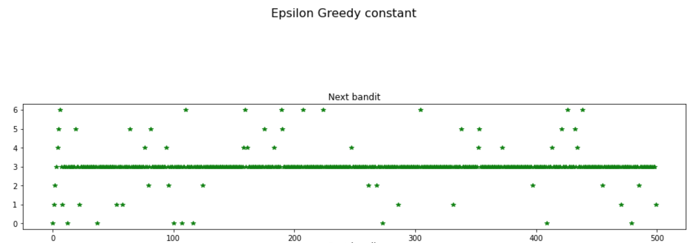

Bandits in the bank
Cyril Godart
Created: 2021-02-02 Tue 16:03
Quick introduction to multi-arms bandits
A class of algorithms
solves:
- allocation
- of limited ressources
- to competing options
- under limited knowledge
- classic reinforcement learning problem
- illustrates trade-off between:
- exploration
- exploitation
What's in a name
Has been illustrated with a casino setup
- a player
- with a fixed sum of money
- chooses which slot machines (one-armed bandits) to play
In the times of Covid
- Thomson's seminal paper
- 1933
- Yale Department of pathology
- general consideration on:
- research planning
- treatment of patients.
is it used ?
- YES !
- for:
- pricing for retailers
- volume vs revenue per item
- recomender systems and ad-placing
- exploit known taste from one user
- introduce new products to consume
- routing in telecommunication network
- Machine Learning: preferred route to avoid supervised learning
- pricing for retailers
by whom ?
- Amazon
- Microsoft
- Apple
The bid-offer spread: a natural application ?
BNPP approach for FX Swaps
- calibration of a S-Curve:
- prior probability of trading given the half-spread width
- the algorithm sets the bid offer spread so as to maximise the expected P&L
Issues with this approach
- mostly a static approach (a dynamic calibration has since been introduced)
- relatively complex parameters
Could bandits help ?
Maybe
- the Bandit algorithm is inherently on-line
- a lot of strategies are dynamically adaptative
- the parametrisation is often intuitive
- allows natural granularity
A minimalistic multi-agent market
Motivation
- No access to engine
- but simulation is possible
Model:
- two or more agents compete
- by submitting bids (or spreads assuming market-mid is unique and no skew)
- bids are stochastic
Implementation: Bank Quote
- an agent quotes stochastically (following a gaussian)
- possibly a time-dependent distribution.
class BankQuote:
# a bare competitor
# quotes with an average spread with some fluctuations.
# gaussian distribution
def __init__(self,
mu = lambda t: 0.2,
var = lambda t: 0.02):
self.mu = mu
self.var = var
def __call__(self, t=1):
mean = self.mu(t)
var = self.var(t)
return np.random.normal(mean, var,1)[0]
Examples of competitors
An almost deterministic broker-dealer
# quotes wide with little variance Citi = BankQuote(mu=lambda t: 0.23, var= lambda t:0.01)An adaptative one
# start wide (.2) then becomes aggressive after 500 rounds JPMorgan = BankQuote(mu = lambda t: 0.2 if t < 500 else 0.13, var= lambda t: 0.002)
Implementation: Market Quote
We consider a perfectly efficient market where the market price is the best quote from competitors
class MarketQuote:
def __init__(self, competitors=[JPMorgan, Citi]):
self.competitors = competitors
def __call__(self, t=1):
return np.min([competitor(t) for
competitor in self.competitors])
Implementation: Quoting against the market
- we issue a quote (stochastic)
- We trade if we quote tighter than the market
code
class BNPPbid: def __init__(self, variance, competitors=[JPMorgan, Citi]): self.quote_market = MarketQuote(competitors= competitors) self.variance = variance def __call__(self, bid, t=1): bid = max(0,np.random.normal(bid, self.variance, 1)[0]) bid_competition = self.quote_market(t) if bid < bid_competition: return bid else: return 0
What can we do with this model ?
- simple
- but helpful to investigate
S-Curve for an (almost) deterministic market (for example)
Corresponding expected P&L
Using a bandit algorithm
Main idea
- discretise the normalised bid axis (say with 7 discrete points)
- when we receive an RFQ, pick one of these
bids
- if the client trades with us, we pocket the reward, which is a deterministic function of this bid.
- nothing otherwise
- In short, each of these bid can actually be seen a bandit associated to its own reward
A remark on discretisation
Where to put the points ?
- if you have no idea you can discretise your axis uniformly
- but in our case we have already a very good idea of where to put the points thanks to the S-cuve. In short, we want to discretise more where the S-curve changes rapidly (high grandient) and much less at the far left and right of the axis.
- In a Laplace-Bayes context, the S-curve is the prior and the bandits are going to help us to refine the posterior distribution.
Performance of individual bandit algorithms
- the MAB are a family of algorithms (even in this simple case)
- we are going to try several of them
- in order to compare them we need a way of evaluating their performance
- this is done through the notion of…
Regret
The regret is:
- the cumulative difference
- between:
- the reward had you done the optimal choice
- and the actual reward
- at each step of the algorithm (each RFQ)
- at best, the regret is 0
- more often, this is a positive quantity that increases with time passing by.
Remarks on Regret
- clearly, an abstract quantity as, in reality, we do not know what the optimal choice is.
- we look at the regret to compare our different strategies, remember ?
P&L deterministic function of the spread
- that's assuming: Notional = 1
- look at $/mio
- tiering of notional
- both
- other tiering possible
- clients
- pairs or pair groups
The A/B (and C/D…) test
- the A/B test is a bandit strategy
- whereby we explore for a certain period
- then we exploit
close up
- once everything else is factored out a bandit strategy is defined by a single function: the one that pick the next candidate.
for the A/B Testing bandit, here it is:
def strategy_next_bandit(self, time, bandit_best): loguru.logger.debug('A/B/C.. testing:') if time <= self.time_testing: # try each spread in turn self.bandit_next = time % self.nb_bandits else: # then pick the best self.bandit_next = self.bests[self.time_testing] return self.bandit_next
A few remarks
- a single hyper-parameter: the number of rounds we spend testing
- although a very simple strategy, in a deterministic environment, it is actually the optimal strategy.
- useful to introduce the material and results
A simple example
- Implementation: Quoting against the market
- and recall: Examples of competitors
- Spreads bandit (disretisation):
- [0.06, 0.1, 0.13, 0.17, 0.21, 0.22, 0.23]
- Time testing: 70
- Time total: 500
Results
Next bandit
Best bandit

Best bandit in hindsight
Regret
Conclusion
- the A/B testing is probably not an appropriate strategy in the context of market-making.
- too sensitive to the calibration period
- assume a static regime
The Epsilon-greedy algorithm
In the ε-greedy
- we exploit
- but dedicate ressources to exploration
- with a probability: ε which does not need to be constant with time.
What's in the name
- the exploration is systematic
- and tries any candidate with equal probability.
- in that sense, the algorithm is greedy
what's in the code
class BenchworkBanditEpsilonGreedy(BenchworkBandit):
def strategy_next_bandit(self, time, bandit_best):
if time < self.nb_bandits:
# choose the next untried bandit
# until they have been all tried
bandit_next = time
elif self.exploreQ(time):
# explore
bandit_next = self.pickup_random_bandit(self.nexts[time-1])
else:
# exploit
bandit_next = self.bests[time-1]
return bandit_next
Epsilon-greedy strategy with constant probability
probability of switch
the probability to try a random bandit aside from the current best one is kept constant
def __init__(self, proba_switch=lambda t: 0.1, **kwargs): super().__init__(**kwargs) # return \epsilon for an epsilon-greedy algo self.proba_switch = proba_switch #default constant epsilon # (...) def exploreQ(self,time): # we explore with a probability of epsilon eps = self.proba_switch(time) sample_uniform =np.random.uniform(0,1) return sample_uniform < eps
A few remarks
- again, one single hyper-parameter: the probability of testing
- a simple strategy but leads to good results even in stochastic settings.
Results: Next bandit

Results: Regret
Results: Switch probability
Epsilon-greedy strategy with decreasing probability
non-constant probability of switch
Recall the constant case
- once we have gained some confidence, exploring becomes less necessary.
the decreasing strategy is following a negative exponential as a cooling or decaying process:
\[\epsilon = e^{-t / h}\]
- with \(h\) the half life
Visually
Results: Next bandit
Results: Regret
Remarks
- a deceptively simple algorithm
- hard to beat on standard scenarios
- but suited for real market conditions ? Answer on that…
Upper Confidence Bound (UCB)
Giving a sense of things to come
- Suppose you take over from colleagues
Results so far:.
Bandit Average reward Nb trials 0 50 35 1 100 2 2 103 10 3 108 200 - which one would you choose next ?
Giving a sense of things to come (continued)
Intuition that:
- more potential in a bandit with:
- slightly lower average but…
- hardly tested
- rather than a bandit:
- tested extensively
- with marginally higher reward
- This is what UCB algorithm formalises
Starting with an empirical understanding
- the UCB-1 picks as next bandit the one for which: \[\mathrm{pnl}_{avg}(k) + \mathrm{pnl}_{max}(k)\sqrt{\frac{2 log(t)}{N_k(t)}}\] is maximum
where:
- \(t\) is the number of rounds so far
- \(N_k(t)\) is the number of time bandit \(k\) has been picked.
- \(\mathrm{pnl}_{avg}(k)\): the empirical aveage so far
- \( \mathrm{pnl}_{max}(k) \): the max possible reward for bandit \(k\) (known in this case)
empirical understanding (continued)
Looking at each part of the criteria: \(pnl_{avg}(k) + pnl_{max}(k)\sqrt{\frac{2 log(t)}{N_k(t)}}\)
- all other things being equal, the bandit with the highest P&L is picked up.
- \(N_k(t)\) at the denominator makes the criterion smaller for bandits that have been picked many times and larger for the ones that have been chosen rarely.
- independently, and for all bandits, the criterion increases with time due to the \(log(t)\) in the numerator. Note though that it increases in relative less due to the \(log\) function.
The net effect is that even a bad bandit (one with a very low P&L) will end up being picked up eventually but less and less frequently if it does not improve its average P&L sufficiently.
Refining the understanding within a gaussian context - 1
- why ? Because we are more familiar with gaussian distribution properties
Suppose two bandits display the following empirical distribution:
Refining the understanding within a gaussian context -2
- again, which one do you test next ?
- well here, this is a bit of a philosophical dilemma.
UCB takes the point of view of…
optimism in the face of uncertainty
Refining the understanding within a gaussian context -3
- try blue until some degree of certitude that its mean is lower or higher than the orange's one.
- for example until:
- the point one standard deviation above the mean for the blue
- is below the corresponding orange one
- then, two outcomes are possible…
Case 1
Case 2
Back to the real case
- in real life, prior is unknown
- many formula available since Markov on the dispersion around the real mean
- one of them is…
Höffding's formula
- for an arbitrarily distributed but bounded (\(a<=X<=b\)) random variable \(X\): \[ \mathbb{P}\left[\mathbb{E}\left[X\right]>\overline{X_{t}}+u\right]≤e^{-\frac{2 t u^2}{b-a}} \]
- hence, the seemingly arbitrary formula driving UCB-1
UCB results: next bandit
UCB results: regret
UCB results: criteria
Conclusions
- in the cases we looked at, the performanc of the UCB algoritm was somewhat below expaction.
- not making assumption on the distribution seems to give too loose bounds
Thomson-sampling
The P&L distribution
In the case of RFQs, the P&L distribution is know since:
- HR ~ Bernouilli
- P&L = spread × HR (recall Notional = 1)
Thomson-Sampling
Thomson-sampling algorithm consists in choosing the next bandit by sampling:
- from the posterior
- at time t-1
Recall Beta distribution - 1
- The conjugate prior of a Bernouilli prior is a beta distribution
- beta-distribution
- defined on the interval [0, 1]
- 2 parameters: α and β
- Beta(1,1) is the uniform distribution over [0,1]
Recall Beta distribution - 2
Suppose that previously:
- p RFQs traded
- q failed to trade
Then
- \[\mathbb{P}\left[RFQ \, \mathrm{trades} | p, q\right] = Beta(p,q)\]
- if RFQ trades again, then the posterior is updated to: {RFQ trades} Beta(p+1,q)
- nice property of the \(beta\)-distribution
Peeking in the code
def strategy_next_bandit(self, time, bandit_best):
if time >= 1:
# ....
for i in range(nb_bandits):
self.samples_beta[time][i] =
self.spreads_bandit[i]*\
np.random.beta(self.wins[time-1][i],
self.losses[time-1][i])
# take the bandit with maximum reward
bandit_next = np.argmax(self.samples_beta[time])
return bandit_next
Thomson-Sampling: results
Next bandit
Regret
Comparison of performance in different scenarios
Deterministic
competitor quotes a constant spread
DB = BankQuote(mu = lambda t: 0.2, var = lambda t: 0.000001)market is just that competitor
bnpp_bid = BNPPbid(0.000001, competitors=[DB])
Deterministic with switch
competitor quotes a constant spread but becomes more aggressive after 500 quotes
Nomura = BankQuote(mu = lambda t: 0.2 if t < 500 else 0.09, var = lambda t: 0.0000001)- again market is just that competitor
Best bandit with hindsight
Epsilon-greedy

UCB-1
Thomson-Sampling
TS empirical distributions - before switch
TS distributions - after switch
TS distributions - towards the end
Switch with noise
adding noise to the previous quote
RBC = BankQuote(mu = lambda t: 0.2 if t < 500 else 0.07, var = lambda t: 0.03)
Distribution after 2700 RFQs observed
Periodic
competitor quotes oscillating:
CBC = BankQuote(mu = lambda t: 1.9*(1+np.sin(6*t/300))/2, var = lambda t: 0.0001)- again market is just that competitor
Best bandit with hindsight
TS distributions towards the end
Table of results
| Scenario | Nb RFQs | TS | esp-greedy cst | eps-greedy var | UCB1 | A/B Test |
|---|---|---|---|---|---|---|
| Deterministic | 500 | 2.5 | 6.5 | 3 | 11 | 7.5 |
| Det. with switch | 3000 | 70 | 70 | 60 | 110 | 160 |
| Switch with noise | 3000 | 120 | 120 | 110 | 150 | 160 |
| Periodic | 3000 | 50 | 60 | 150 | 80 | 40 |
| Average | 60.625 | 64.125 | 80.75 | 87.75 | 91.875 |
Concluding remarks
- bandit setup does not apply only to a RFQ setup.
- can be extended to streaming
- apply bandit by time period
- keep other tierings unchanged
References
- Jupyter notebook to be circulated.
- Blog Sébastien Bubeck at Princeton
- His graduate course
- Python library